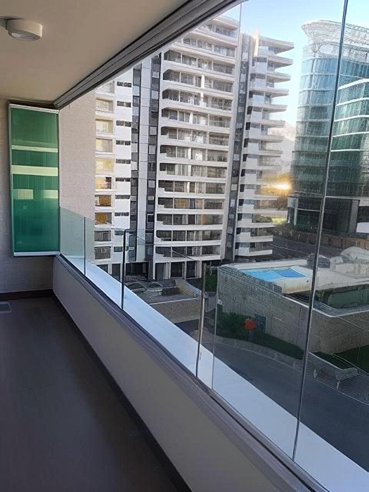
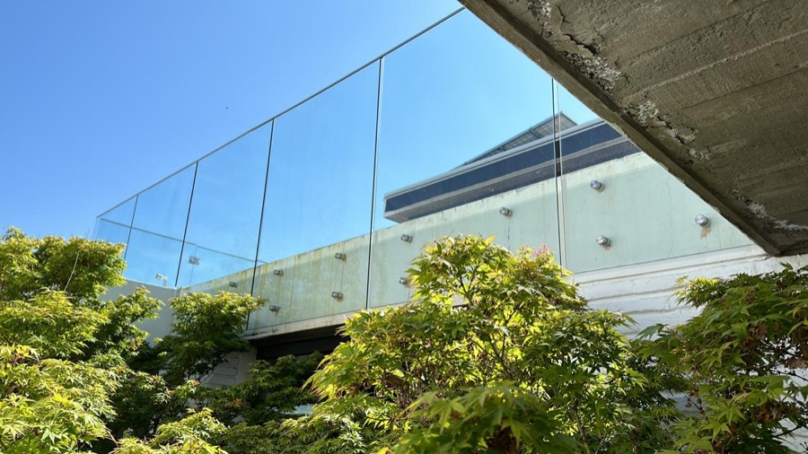
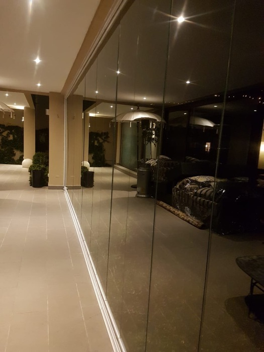
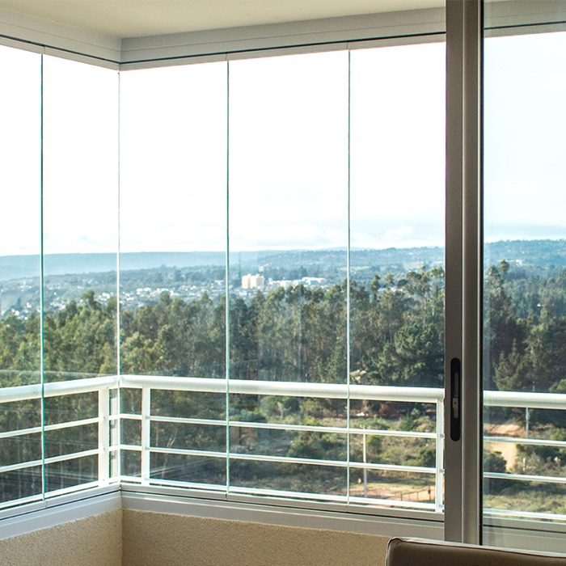
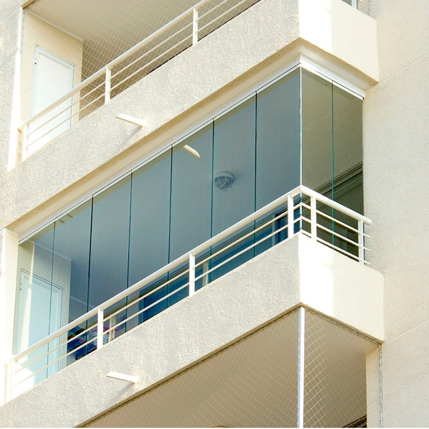
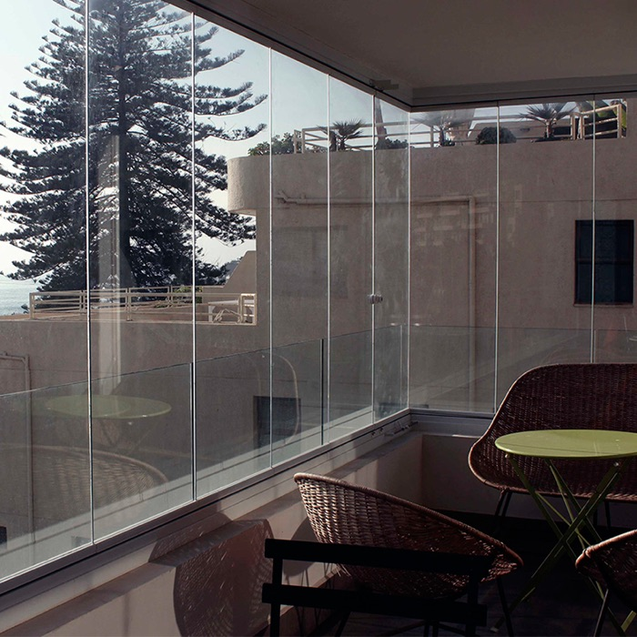
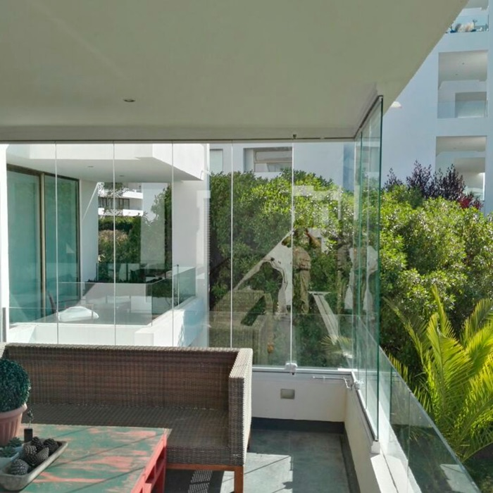
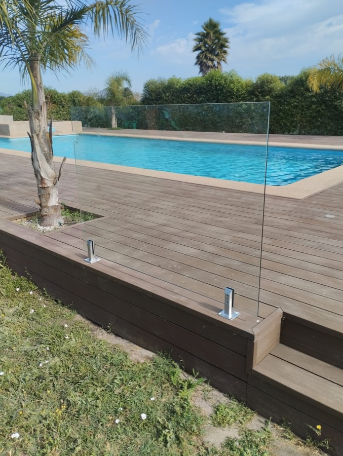
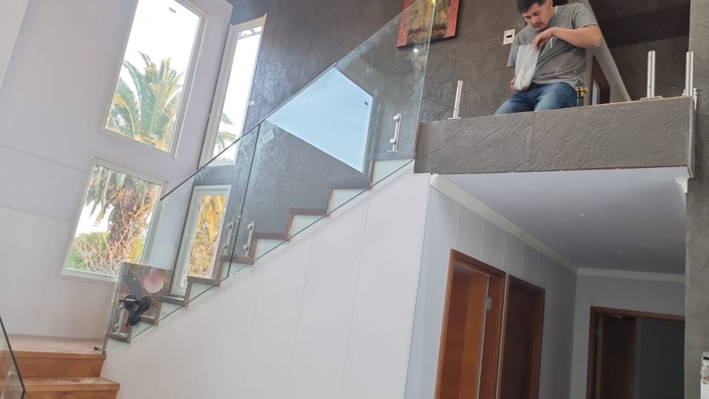
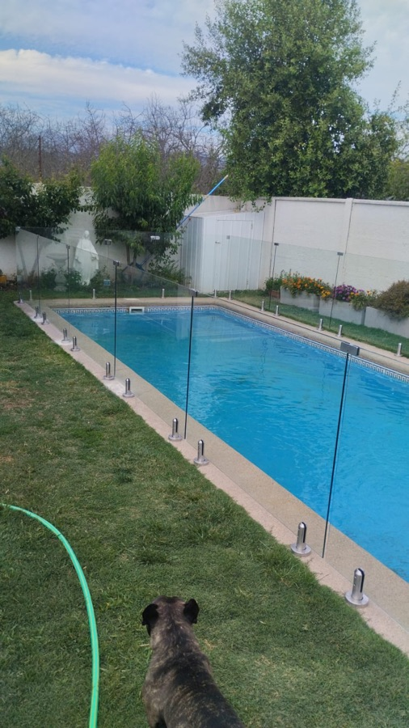

Cortinas de Cristal Plegables
Paneles que se pliegan hacia un costado como un acordeón, dejando el vano completamente abierto. La opción más elegida para terrazas y quinchos.
Cotizar Cortinas Plegables →Descubre cómo nuestras cortinas de cristal plegables pueden mejorar tu hogar o negocio. Cotiza hoy mismo y recibe atención inmediata por WhatsApp. Instalación profesional con garantía Akristalia.
Trabajamos con vidrio templado a medida para terrazas, balcones y locales comerciales — tú eliges cómo se abre y cómo se ve.

Paneles que se pliegan hacia un costado como un acordeón, dejando el vano completamente abierto. La opción más elegida para terrazas y quinchos.
Cotizar Cortinas Plegables →Paneles que se deslizan sobre rieles y se apilan a un costado — ideal para grandes ventanales y vanos anchos que necesitan abrirse por completo.
Cotizar Multi Slide →
Barandas de vidrio templado para balcones, terrazas y escaleras: la seguridad de una baranda sólida, sin bloquear la vista.
Cotizar Barandas de Cristal →Nuestras cortinas se pliegan fácilmente, optimizando el espacio y ofreciendo una vista panorámica sin obstrucciones.
Hablemos ahora por WhatsApp →Disfruta de un ambiente confortable todo el año, con protección contra el ruido exterior y las temperaturas extremas.
Estamos a 1 clic por WhatsApp →Instalación profesional respaldada por 3 años de garantía, con atención directa del equipo técnico ante cualquier consulta.
Cotiza tu proyecto →







"Las cortinas de cristal plegables han transformado mi terraza en un espacio acogedor y elegante. ¡Estoy encantado con el resultado!"
"La calidad y el diseño son excepcionales. Ahora puedo disfrutar de mi jardín incluso en invierno."
"Excelente servicio al cliente y un producto que realmente mejora la estética de mi hogar."
Incluye la fabricación a medida en vidrio templado, los perfiles y herrajes, y la instalación profesional a cargo del equipo Akristalia. Todo con garantía incluida.
Depende de las dimensiones del espacio, el sistema elegido (Cortinas Plegables, Multi Slide o Barandas de Cristal) y los terminaciones. Te enviamos una cotización personalizada y sin costo por WhatsApp.
En promedio, 20 días desde que se confirma el proyecto y se toman las medidas definitivas en terreno.
3 años de garantía Akristalia sobre la instalación y los materiales, con atención directa del equipo técnico ante cualquier consulta.
Sí, ofrecemos hasta 6 cuotas al precio contado. Te contamos el detalle exacto al cotizar según el proyecto.
Terrazas, quinchos, balcones y locales comerciales en Santiago y la V Región. Si tienes dudas sobre tu caso puntual, escríbenos y te asesoramos antes de cotizar.
Descubre cómo nuestras Cortinas de Cristal Plegables pueden mejorar tu hogar o negocio. Cotiza hoy mismo y recibe atención inmediata por WhatsApp. Instalación profesional con garantía Akristalia.
Hablemos Enseguida por WhatsApp+56 9 3429 1937
ventas@akristalia.cl
Santa Beatriz 100, of 1003, Providencia, Santiago